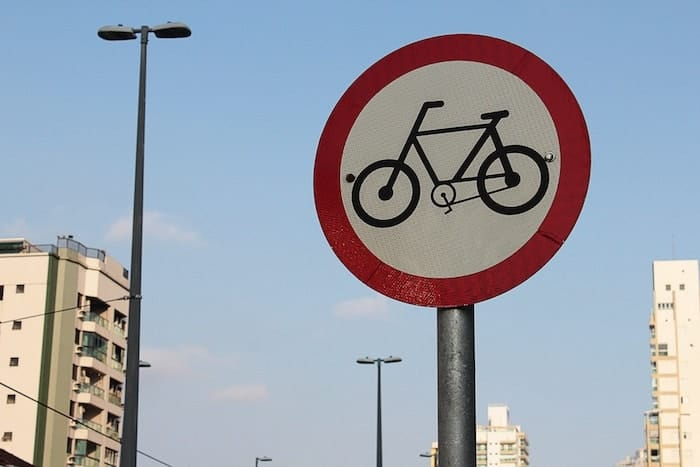

The Dangers of Electric Bikes
Bikes do, in general, pose certain risks and dangers to the rider. This is true of traditional pedal bikes and it is also true of…

Bikes do, in general, pose certain risks and dangers to the rider. This is true of traditional pedal bikes and it is also true of electric bikes.
When it comes to bicycling, danger is typically located in the environment where the cycling is taking place. Given this, certain categories of bikes tend to be more dangerous than others because of what riders do with them. For example, if you’re riding a mountain bike in its intended environment, i.e. down a very, very steep mountain path, you’re going to encounter a significant level of danger.
The same is true of electric bikes (ebikes). It really depends on how and where you ride them. Pottering along down a deserted country lane is unlikely to pose a huge risk; unless said country lane happens to be a lane that locals like to drive like maniacs down (as was the case where I grew up!). Then again, choosing to ride your electric bike in busy inner-city traffic is likely to be far more life-threatening, generally speaking.
The first thing to remember about electric bike safety: Wear a Helmet! Get one right now!
What Are the Specific Dangers of Electric Bikes?
The ebike does pose some specific hazards that you won’t encounter when riding traditional bike models, be it a city bike, hybrid, mountain, or even fixed-gear racing bike (and I certainly wouldn’t advocate riding a ‘fixie’ unless you are an excellent cyclist, they are in a category of their own when it comes to dangerous bikes!).
Due to the dangers of riding electric bikes, I decided to dedicate this article to exploring those dangers and providing my fellow rider, like you, with some basic advice on how to stay safe while riding your ebike.
1. Your ebike battery catches fire
Imagine, you’re whizzing along on your ebike, joyfully surpassing all the fools on their outdated, antiquated pedal bikes and then…’BOOM’! Your electric bike battery has caught fire and is sending sparks and flames up between your legs.
Such an event would certainly make you think twice about laying down the (rather large) wad of cash needed to replace the ebike battery. One might even consider ditching the whole ‘electric’ bike thing and going back to the ‘suddenly not-so antiquated’ seeming pedal system.
But hold your horses! Before you start getting scared that your electric bike battery is going to blow up at any second let me tell you one thing: As far as I know, and as far as any of the contributors to eBikeBible are aware, exploding ebike batteries is a phenomenon only associated with homemade batteries.
Therefore, if you are planning to make your own battery, please, please make sure you know what you are doing! As for everyone else, just be prepared to hand over that wad of cash if your ebike battery decides to die.
If you buy your lithium battery from a certified producer it will be correctly designed to handle high temperatures, overheating, and so on. Other problems with electric bike batteries can arise, even when purchased from the big brands like Bosch, but we’re pretty certain they won’t catch fire 😉
2. Poor throttle control on electric bikes can cause minor accidents
Throttle-happy ebike rides have indeed been known to cause minor, almost slow-motion accidents. Using too much throttle from standing can cause the electric bike to jump forward and inexperienced riders can sometimes lose control in such situations and bump into other ebikes, pedestrians, or other vehicles.
However, because ebike acceleration is nothing like the acceleration of a Ferrari or Lamborghini, these accidents occur at very low speeds resulting in very little harm or damage being done.
Just remember to start off slowly and ease into the throttle. Don’t be an ebike ‘boy racer’!
3. Forgetting to obey traffic rules just because your ebiking

The majority of accidents involving ebikes are not due to the bike itself but rather the way riders approach cycling electric bikes. It is important to remember that ebikes are, in regards to speed, a cross between traditional pedal bicycles and mopeds (scooters). The increased speed of an electric bike presents its own risks if people fail to take it seriously.
In some place, high-powered electric bikes, which can reach speeds of 60km per hour, have to be registered with the motor vehicle organisation of that country/region. In such cases, ebikes are equipped with their own licence plate to ensure accountability and riders must wear helmets.
However, even low-powered electric bikes can still reach significant speeds and accelerate much faster than pedal bikes. Since riders are not required to hold a driving licence and therefore do not always understand the rules of the road completely, this can lead to problems.
There is now a significant level of discussion in some parts of the world regarding the regulation of ebikes. We will do our best to keep you updated about these developments.
To avoid road accidents while riding your electric bike make sure you know the rules of the road. Read up on the meaning of road signs and be sure to follow the speed limits even if you are not required to by law.
4. Electric bikes are more dangerous for seniors
While it is true that electric bikes have been shown to be more dangerous to seniors, this statement is a little misleading. This is because ALL bikes are considered more dangerous for the elderly and, as yet, ebikes have not been shown to be more dangerous than regular bikes for seniors.
When we get older our reactions start to slow down, so if you’re a senior taking a cycle ride, just be sure to take it easy and keep a sharp eye on your surroundings.
To Conclude on the Dangers of Electric Bikes
Having covered a few of the dangers associated with riding ebikes it’s clear that while electric bikes do represent a unique threat to our safety it is generally comparable to riding a regular pedal bike.
We highly recommend that everyone follow the safety instructions provided by ebike manufacturers and the government when out cycling. Wear a helmet and whatever other protective gear your think is applicable for the environment you’re cycling in. And be careful. Ebikes are faster and more powerful than regular bikes, as such, they require a higher level of focus and care.
I hope you have a safe and enjoyable time cycling your electric bike! Don’t forget to wear a helmet!
Want to know more about the dangers of riding electric bikes? Then watch this (rather cheesy) video about ebike safety: